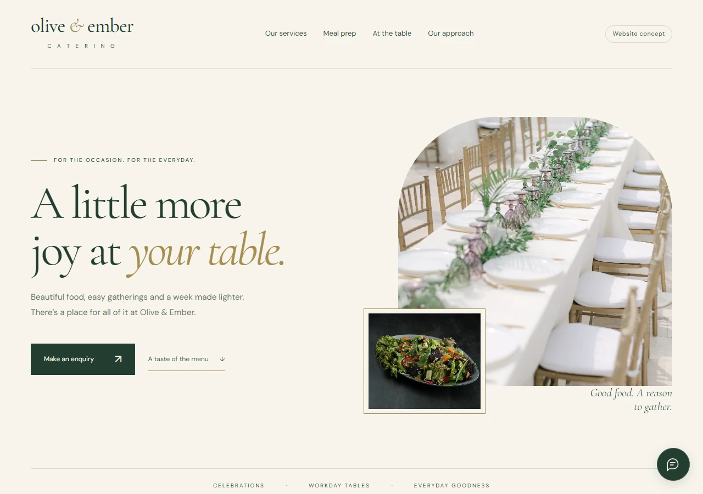
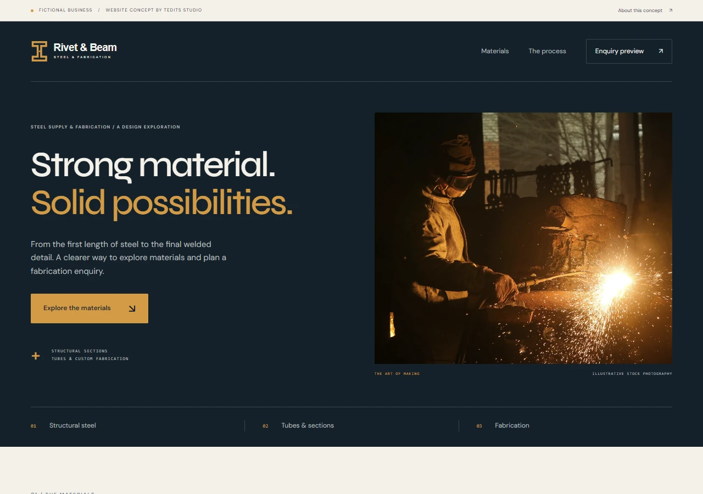

Be found on Google.
Reach people already looking for what you offer. Clear pages about your services and where you work help search engines understand your business.


Independent web design · Zambia & worldwide
Someone is looking for
right now.
They hear your name. They look you up.
What do they find?
Reach people already looking for what you offer. Clear pages about your services and where you work help search engines understand your business.
Services, prices and FAQs in one easy place. People can find what they need and take the next step, without waiting for a reply in their DMs.
Let your work, your story and genuine client feedback speak for you. Give someone a clearer sense of who they’re choosing before they get in touch.
Scroll to explore · 1 of 3 ↓
Social media starts the conversation. Your website gives that interest somewhere to go: a place to explore your business, find the details and get in touch. They work better together.
Tell me about your projectI'm the creative behind Tedits Studio. You'll work directly with me, from the first conversation to the final details.
Based in Zambia. Working with businesses locally and around the world.
Meet the video & motion sideWe start with your business and the people you want to reach. The colours, type, imagery and structure follow from there.
Your ideas and questions come straight to the person designing and building your site. We can talk through the details together.
3 rounds of revisions are included before launch, so there is time to refine the details and make it yours.
Three independent concepts.
Different businesses, different needs.

01 / CATERING & EVENTS
Help someone picture their occasion, explore the menus, and start a conversation. A warm catering concept built around those decisions.
Web design · Responsive development
Explore the conceptGood food can make a big celebration feel special and an ordinary week feel easier. I imagined a catering business that cared about both, with a website that felt as welcoming as sitting down at its table.
Warm greens, generous food photography, and an unhurried layout set that feeling. Sample menus give visitors something to picture, while the enquiry flow starts with the occasion they have in mind.
Demo project for a fictional business. No client commission, testimonials, or business results are claimed. Stock photos illustrate the concept.

02 / STEEL & FABRICATION
Give experienced buyers a clear catalogue, and people with a new idea a comfortable way to explain it. Two starting points, one industrial concept.
Web design · Responsive development
Explore the conceptSome people know the exact steel section they need. Others have a rough sketch and an idea they want to make real. This concept gives both a comfortable starting point, without expecting everyone to speak the language of fabrication.
The material catalogue offers a straightforward route for familiar jobs. For everything else, there is room to describe an idea, add a drawing, and work through the details in an enquiry preview.
Fictional business and independent concept. No real company commissioned, approved, or endorsed this project. Photography is illustrative; the demo sends nothing.

03 / EVENT PLANNING & HOSTING
Make the invitation part of the experience. An events concept that introduces its personality through an unfolding letter and a guided planning journey.
Web design · Interactive motion
Explore the conceptA physical invitation makes an occasion feel real before anyone arrives. I used that first gesture to imagine Tedeats Events: a fictional planning and hosting brand where the website itself extends the invitation.
Cherry red, paper white and editorial type set the tone. Photographs emerge from an envelope and settle into a stack as you scroll. A bouquet follows a curved route through the planning stages, while layered stock photographs and drifting petals give the journey depth.
Tedeats Events is a fictional brand and independent portfolio concept. Credited stock photographs illustrate the mood, not Tedeats client work. The enquiry form is a local demonstration: nothing is sent, booked or paid for. No client commission, testimonials or business results are claimed.
We talk about your business, your audience, and what the website needs to do. You share the content, photographs and details I need to get started.
I shape the visual direction and build a site that works across phones, tablets and desktops. For a standard site, I aim for 3–5 days once I have the essentials. Larger projects take longer.
You review the site, we work through the included revisions, and it goes live when you are happy with it.
A limited offer for a one- or two-page business website, designed and built around your business.
€200
Once-off payment
For website design and development.
Domain and hosting charges are excluded. Domain registration and website hosting are billed separately.
Larger sites, transactions and integrations are quoted separately. Ongoing support is available for a separate monthly charge; updates after the included revisions are paid work.
Enquire about the offerTell me about the business.
We can take it from there.